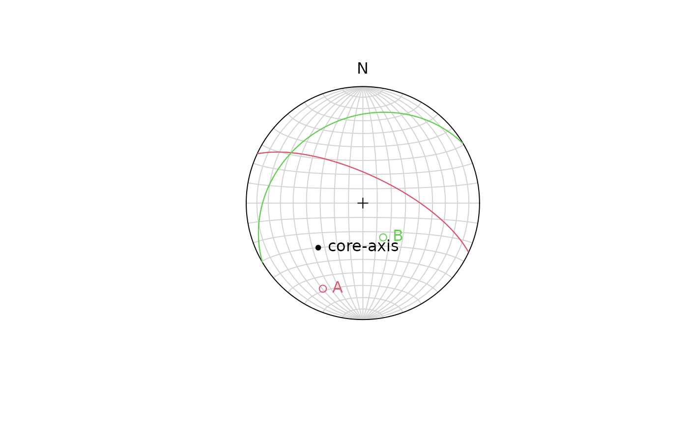

Calculates the orientation of a plane or line from internal core angles (\(\alpha\), \(\beta\), and \(\gamma\)) of oriented drill cores
Arguments
- azi
numeric. Angle between North and the borehole trajectory projected to the horizontal. The angle is measured clockwise from north and has a value between 0° and 360°.
- inc
numeric. Acute angle between the horizontal plane and the trajectory of the borehole. The value of the inclination can be between −90° and 90°, where
inc>0° corresponds to a borehole pointing downwards.- alpha
numeric. Acute dihedral angle between the geological plane and the trajectory of the borehole. The angle is restricted to be between 0° and 90°, where 90° corresponds to a plane perpendicular to the borehole, i.e. the trajectory of the borehole is parallel to the normal vector of the plane.
- beta
numeric. Angle from a reference line (line of the top of the roof of the borehole profile) to the lower inflexion point of the fracture trace on the borehole wall, i.e. where the perimeter of the borehole is the tangent of the fracture trace. The angle is measured clockwise looking in the direction of the borehole trajectory and can hence be between 0° and 360°.
- gamma
(optional) numeric. Linear feature on a plane measured in clockwise direction from ellipse long axis at DOWN hole end (positive angle). If measured clockwise on a plane facing UP hole, the angle is negative.
References
Stigsson, M., & Munier, R. (2013). Orientation uncertainty goes bananas: An algorithm to visualise the uncertainty sample space on stereonets for oriented objects measured in boreholes. Computers and Geosciences, 56, 56–61. https://doi.org/10.1016/j.cageo.2013.03.001
Examples
# examples from Roger Marjoribanks (2016);
# http://rogermarjoribanks.info/wp-content/uploads/2016/03/Plotting-alpha-to-locate-P.jpg
azi <- 225
inc <- 45
# single alpha-beta measurement
drillcore_transformation(azi, inc, alpha = 60, beta = 320)
#> Plane object (n = 1):
#> dip_direction dip
#> 25.00392 70.02959
drillcore_transformation(azi, inc, 45, 220)
#> Plane object (n = 1):
#> dip_direction dip
#> 329.43276 27.99089
# example from Stigsson and Munier:
drillcore_transformation(120, 55, 50, 270)
#> Plane object (n = 1):
#> dip_direction dip
#> 94.35502 51.13358
# multiple alpha-beta measurements
my_alphas <- c(60, 45)
my_betas <- c(320, 220)
res <- drillcore_transformation(azi, inc, alpha = my_alphas, beta = my_betas)
# Plot core-axis, and planes in stereonet
plot(Line(azi, inc), lab = "core-axis")
points(res, col = 2:3)
lines(res, col = 2:3)
text(res, labels = c("A", "B"), col = 2:3, pos = 4)

# gamma measurements
my_gammas <- c(20, -10)
res2 <- drillcore_transformation(azi, inc, my_alphas, my_betas, my_gammas)
plot(res2, col = 2:3)
text(Line(res2), labels = c("lA", "lB"), col = 2:3, pos = 4)